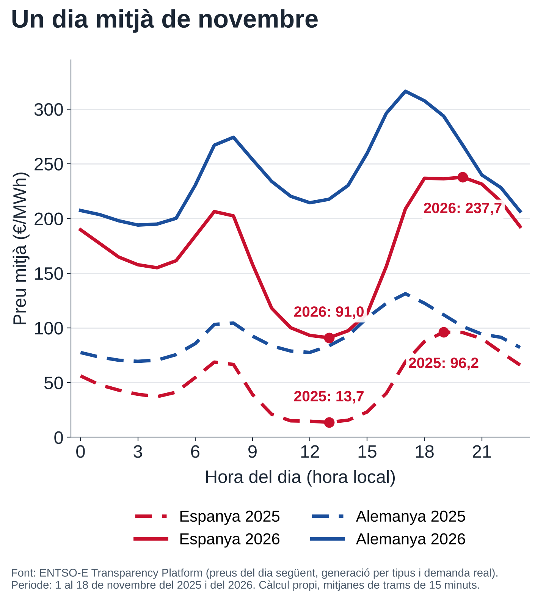
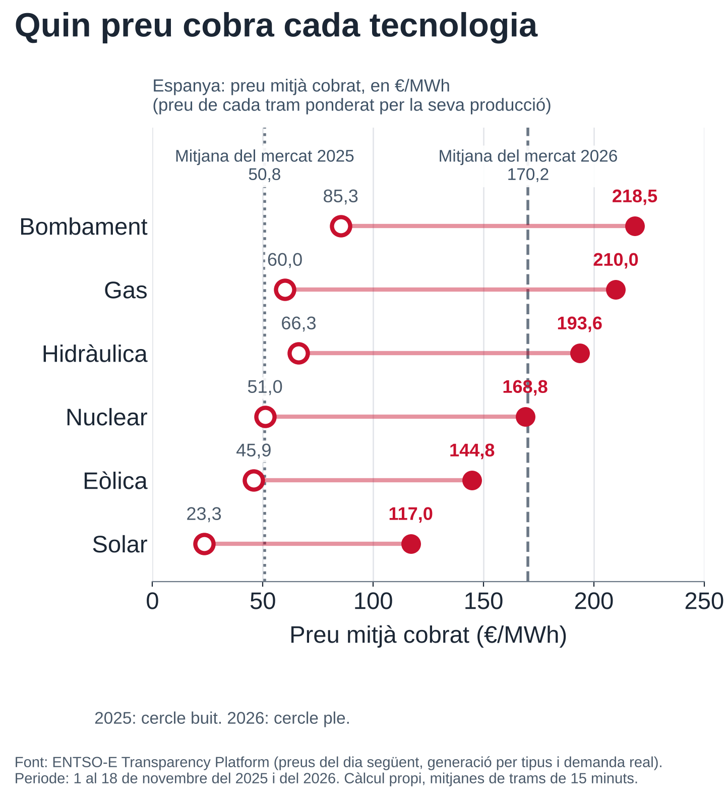

Què hem comparat
- Les dades: les d'ENTSO-E, la plataforma pública on els operadors de la xarxa europea publiquen dades del mercat elèctric. N'usem tres: el preu de l'electricitat al mercat del dia següent, la generació de cada tipus de central i la demanda real, d'Espanya i d'Alemanya (amb Luxemburg, que forma amb ella una sola zona de preus).
- El període: de l'1 al 18 de novembre del 2025 i de l'1 al 18 de novembre del 2026, en trams de 15 minuts i en hora local. Farem aquest mateix exercici durant l'hivern i quan acabi, per treure'n conclusions.
Primer, el preu
Aquest és el preu al qual es paga l'electricitat al mercat majorista. Si el teu contracte és indexat, el preu de la teva energia segueix aquest mercat, i per això la pujada arriba a la teva factura.
A Espanya, el preu mitjà va passar de 50,8 a 170,2 euros per MWh (3,3 vegades més). A Alemanya, de 91,9 a 239,8 (2,6 vegades). Un MWh són mil kWh, la unitat que veus a la teva factura. El 2026, el 42,8 % dels trams (períodes de 15 minuts) va superar els 200 € per MWh a Espanya, i el 74,8 % a Alemanya. El 2025, cap a Espanya i només el 0,06 % a Alemanya.
Espanya continua sent més barata que Alemanya, però la distància s'escurça: el seu preu era el 55 % de l'alemany l'any passat i és el 71 % enguany. Entre juliol i octubre del 2026 va ser gairebé igual: entre el 93 % i el 99 % de l'alemany (en els mateixos mesos del 2025, entre el 73 % i el 90 %).
Continuaran apropant-se fins a igualar-se? Amb aquestes dades no es pot dir: el novembre torna a separar-los, i la tendència d'un sol any no és prou per projectar-la.
La generació solar i eòlica no explica la pujada
La part de la demanda coberta per generació solar i eòlica gairebé no va canviar. A Espanya va ser del 52,9 % l'any passat i del 51,5 % enguany; a Alemanya, del 36,9 % els dos anys. La demanda total va pujar un 2,9 % a Espanya i un 4,3 % a Alemanya.
Per comprovar-ho, separem els trams segons aquesta part, en cinc bandes de menys del 20 % a més del 80 %. El primer gràfic les agrupa en tres: poca (menys del 40 %), mitjana (del 40 al 60 %) i molta (el 60 % o més). Si la pujada es degués a que hi ha menys generació solar i eòlica, amb la mateixa part de demanda coberta el preu seria semblant al de l'any passat.

Què ens diu aquest gràfic. Dues coses. Primera: els preus baixen d'esquerra a dreta, és a dir, com més gran és la generació solar i eòlica, més barata és la llum. Segona: amb la mateixa generació, el preu del 2026 és molt més alt, en els tres grups i en els dos països. A Espanya, amb una generació mitjana (del 40 al 60 % de la demanda), va passar de 50,8 a 186,8 € per MWh.
Sí que va canviar una mica el repartiment de les hores: hi ha més hores a la banda més baixa, amb menys del 20 % de la demanda coberta per generació solar i eòlica (a Espanya, de 31 a 55 hores; a Alemanya, de 88 a 139). Però això canvia molt poc el preu mitjà. Vam fer una prova: vam prendre les hores del 2026, amb el seu repartiment de més i menys generació solar i eòlica, però amb els preus del 2025. El preu mitjà d'Espanya hauria estat de 53,7 € per MWh en lloc dels 170,2 € reals, només 2,9 € més que el 2025 (50,8 €). El d'Alemanya, 89,2 €, menys que el 2025 (91,9 €). És a dir, gairebé tota la pujada (98 % a Espanya) ve del fet que cada hora costa més, no del fet que hi hagi més hores amb poca generació solar i eòlica.
Dins de cada any, la correlació entre generació solar i eòlica i preu és de -0,89 i -0,87 a Espanya, i de -0,71 i -0,74 a Alemanya (com més a prop de -1, més clar és que quan una puja l'altra baixa). És a dir, la generació solar i eòlica abarateix la llum hora a hora, però no explica per què tot el nivell de preus s'ha desplaçat cap amunt.
El que sí que ha canviat: més gas
La generació amb gas va passar de 2.543 a 2.900 GWh a Espanya (+14 %) i de 3.996 a 5.136 GWh a Alemanya (+29 %). Com més gas entra en un tram, més alt és el preu, i aquesta relació és més forta enguany a Espanya: la correlació va passar de 0,74 a 0,91.
El gas és el principal sospitós: quan cal per cobrir la demanda, el preu puja, i enguany en cal més. Tot i això, un 14 % més de gas a Espanya no explica per si sol que el preu es tripliqui, i amb aquestes dades no podem dir què més hi intervé.
Un dia mitjà: per què importa a quina hora
El segon gràfic mostra com canvia el preu al llarg d'un dia mitjà de novembre.

A Espanya, l'hora més barata és a les 13 h: 13,7 € per MWh l'any passat i 91,0 € enguany (6,6 vegades més). La més cara és a la tarda i a la nit: 96,2 € i 237,7 €. La diferència entre l'hora més cara i la més barata va passar de 82 a 147 € per MWh. A Alemanya va passar de 62 a 122 €. A Espanya la vall és al migdia; a Alemanya, de matinada.
Moure consum de les hores cares a les barates val ara bastant més que fa un any. És el que fa una bateria: guarda energia quan és barata i l'usa quan és cara.
Qui hi guanya més amb la pujada?
Se sent dir sovint que la gran beneficiada d'una pujada així és la fotovoltaica, perquè els seus costos no canvien i cobra el mateix que les centrals més cares.
Així funciona el mercat: a cada tram, totes les centrals cobren el mateix preu, el de l'última oferta necessària per cobrir la demanda. Però no totes produeixen a les mateixes hores. Per això calculem el preu cobrat de cada tecnologia: el preu de cada tram, ponderat pel que va produir en ell. Els ingressos de mercat són la seva producció multiplicada per aquest preu.

La solar és la tecnologia a la qual menys li puja el preu cobrat: de 23,3 a 117,0 € per MWh (+94 €, davant de +150 € del gas). El 77 % de la seva producció cau entre les 10 i les 16 h, quan el preu és més baix.
En euros totals, els ingressos de mercat pugen més en l'eòlica (+399 milions d'€) i en la nuclear (+332 milions d'€) que en la solar (+177 milions d'€). Proporcionalment, la solar és la que més creix (×5,2), perquè partia de preus molt baixos. El bombament i la hidràulica cobren per sobre de la mitjana, és a dir, produeixen sobretot en hores cares.
A Alemanya, la solar cobra el 90 % de la mitjana (216,9 € davant de 239,8 €); a Espanya, el 69 %.
L'energia solar guanya molt més que abans, però és la que menys cobra i la que menys puja per cada MWh. El que més val en aquestes setmanes no és el tipus de central, sinó produir quan la llum és cara. És la mateixa lògica que mou una bateria.
El que aquestes dades no diuen: són ingressos al preu del mercat, no beneficis, perquè no tenim els costos de cada central. El gas ingressa molt, però el seu combustible també costa més i no en sabem el marge. I no sabem quanta energia es ven amb contractes a preu fix, que no cobren el preu del mercat.
Què significa per a la teva empresa
Si el teu contracte és indexat (el preu de la teva energia segueix el mercat), el que pagues depèn de quan consumeixes. Amb una diferència de 147 € per MWh entre l'hora més barata i la més cara, importa saber quant del teu consum cau a les cares. Si és fix, el novembre no et canvia la factura, però el contracte que signis després es cotitzarà amb aquest mercat. Ho expliquem a l'article sobre el contracte indexat i el fix.
Si el que t'encaixa és una bateria, el model Energy as a Service (EaaS) evita que hi posis el capital: l'actiu el finança un fons i el pagament s'integra a la teva operació. BioEsol, fabricant i soci tecnològic de Vesta, s'encarrega del disseny, la instal·lació, l'operació i el manteniment. És un contracte a llarg termini.
Límits de l'anàlisi
- Període curt. Són 18 dies de novembre, no un hivern. Repetirem l'anàlisi amb desembre, gener i febrer.
- Correlació no és causa. Que el preu pugi amb el gas no demostra que el gas ho causi.
- Falten dades. No tenim els preus dels combustibles ni els intercanvis entre països, ni sabem quina central va marcar el preu a cada hora.
- Mitjanes simples. Són mitjanes de trams de 15 minuts, no ponderades per consum, i les bandes de generació solar i eòlica són una simplificació: no distingeixen entre solar i eòlica ni entre hores del dia.
- Dades que poden canviar. ENTSO-E pot corregir les dades, i al novembre va avisar d'incidències de publicació de dades de Red Eléctrica, resoltes el 16. A la nostra finestra falta un sol tram de generació d'Espanya.
- Alemanya. Fem servir la seva subhasta acoblada amb la resta d'Europa, que és la que coincideix amb la d'Espanya.
Conclusió
Amb la mateixa generació solar i eòlica i gairebé la mateixa demanda, la llum costa entre 2,6 i 3,3 vegades més que fa un any, hi ha més gas en la generació i la diferència entre les hores barates i les cares gairebé s'ha duplicat.
La generació solar i eòlica no sembla la causa: el repartiment d'hores amb més o menys generació explica només una part mínima de la pujada. El gas és el sospitós principal, tot i que amb aquestes dades no ho podem demostrar. La solar guanya molt més que abans, però no és la que més puja per cada MWh: el que més val és produir quan la llum és cara. Per a una empresa, la lliçó pràctica és que el preu de cada hora importa més que abans, i que saber quan consumeixes és el primer pas.
D'on surten aquestes dades
- Preus del mercat del dia següent (12.1.D), generació real per tipus de central (16.1.B&C) i demanda real (6.1.A) d'Espanya (zona BZN|ES) i d'Alemanya i Luxemburg (BZN|DE-LU): ENTSO-E Transparency Platform, descarregats el 23 de novembre del 2026.
- Període: de l'1 al 18 de novembre del 2025 i del 2026, en trams de 15 minuts i en hora local. Tots els números de l'article són un càlcul propi amb aquestes dades.
- El que diem sobre com funciona el mercat (totes les centrals cobren el mateix preu a cada tram) i sobre els contractes indexat i fix no surt d'aquestes dades.